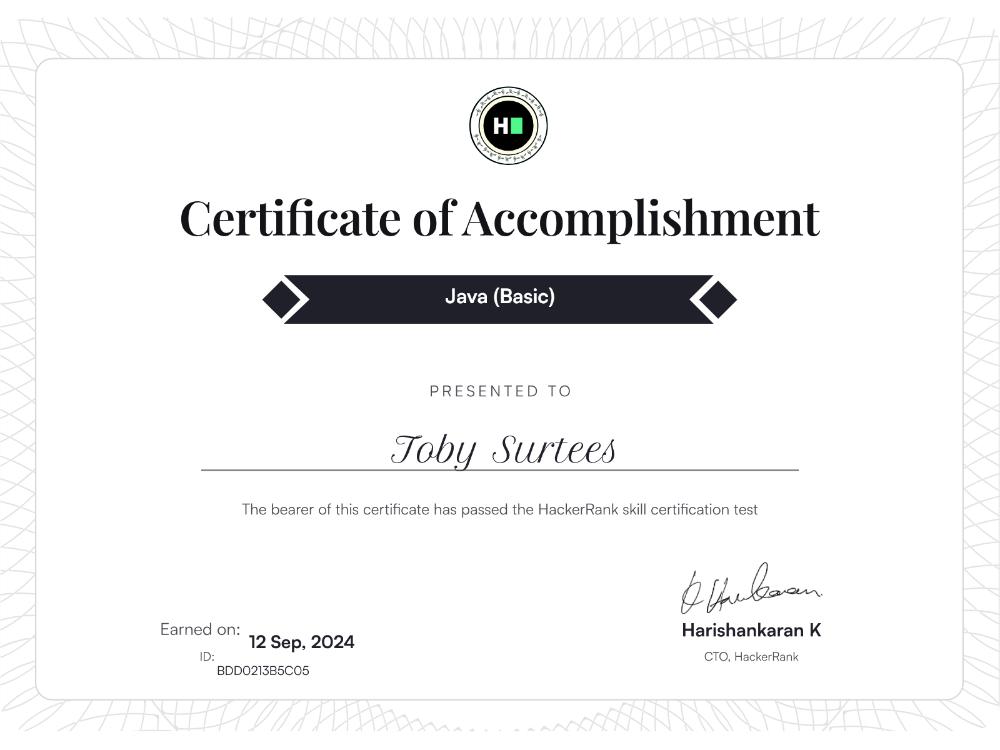

Toby Surtees
Graduate Software Developer
Resolute Computer Science Graduate from the University of Nottingham with strong interpersonal and communication skills. Equipped with a solid foundation in coding, problem-solving, and teamwork, I am eager to apply my knowledge to real-world challenges, whether independently or as part of a team. Committed to continuous growth, I am seeking opportunities to expand my technical expertise and provide meaningful contributions within my field.

A Short Biography
Hello! My name is Toby, and I am a graduate Computer Scientist and Software Developer looking for new and exciting career opportunities.
Born in Doncaster, South Yorkshire, in 2004, I quickly fell in love with
all things tech after being exposed to the cutting-edge Nintendo DSi and early iterations of online Flash games. Since then, my curiosity for the inner workings of programs and software, as well as computer hardware, has
flourished, and my enthusiasm for computer science is as strong as ever!
From the fledgling beginnings of Computer Science at GCSE level, I have since progressed through an A* Grade at A-Level and, most recently, a First Class BSc Award from the University of Nottingham in Computer Science.
My experience at university has opened my eyes to the truly limitless potential of computer science and has helped me grow as a programmer to create many projects I can be proud of.
I hope from the contents of this page, you can share in my passion for software development and tech.
Projects
Journaling to Insight - Empowering People with Dementia using AI and Social Robotics.
Publication:
Alzheimer's Association International Conference (July 2025) - Poster and Abstract Presentation.
Languages & Software:
Java, Python, IntelliJ IDEA, VSCode, Oracle VirtualBox, Ubuntu, Robot Operating System, Git, GitHub.
Description:
My largest project to date; I designed, documented and implemented a comprehensive system with the goal of improving the quality of life for people with dementia by using a combination of Social Robotics, in the form of a MiRo Social Robot, and Natural Language Processing to automate and give a friendly face to challenging tasks faced by the users. The system is designed to be totally modular, allowing plenty of room for future work and improvement, and easy switching of elements (Using a different type of Social Robot, etc). The modules I designed for this system were based on detailed research of the effects of dementia, as well as previous effective works presented by other researchers. Using this research, I implemented an Android Application capable of analysing user diary entries and extracting important details, which are then used to plot automatic reminders for Events, alert carers of downward trends in mood and happiness, and track medications. This application ties directly into the Social Robot, which is used to provide companionship to the user, as well as take voice inputs to remove the need to type or even interact directly with the application. After rigorous testing, I showed that this suite of tools provides a solid base for research into the area of Social Robotics and AI for use with people with dementia, and shows promise in helping improve the quality of life for these individuals.
GitHub: Currently Unavailable
Project Media:
Abstract:

Full Paper:

AAIC2025 Poster:

Summary Video:
Knott.Three.Words - Cross-Platform Route Optimisation & Delivery System using W3W.
Languages & Software:
Java, IntelliJ IDEA, Google Firebase, Spring Boot, Git, GitHub.
Description:
A cross-platform mobile application designed to integrate with current commercial systems; This project is designed to provide optimised delivery routes in the form of What3Words waypoints to delivery drivers, whilst avoiding roads that their vehicles cannot pass through (e.g. HGVs and weak bridges). The stimulus for this project was the delivery of construction materials to large sites, such as HS2, that do not have traditional postcodes, which is highly relevant to clients of our industry sponsor, Kerridge Commercial Systems. The application is built in React Native, with a RESTful API back-end built with Spring Boot in Java. We have tested the application with a mock commercial system; however, the next steps for the project would be to integrate it into the workflow of a real-life company.
Personal Involvement:
This project was made in collaboration with Kerridge Commercial Systems (Now Klipboard) in 2024. My role in the development was as a back-end team lead, where I supervised a team of 4 in the production of the Java and Spring Boot based route plotting system, app cloud storage, and integration with the What3Words API. Under my supervision, my team was able to design and implement an effective route plotting system, taking in vehicle parameters such as vehicle weight and size, and able to direct delivery drivers to unmarked sites using What3Words Addresses. The route plotting system used the TomTom API with some added functionality for HGV-specific routes, as well as Waze-inspired user interactions allowing drivers to manually mark routes as unsuitable, as well as reporting traffic and other incidents. We then used the What3Words API to obtain accurate address locations for these unmarked sites. An additional component of this system was the use of Google Firebase for online access, storing route and cargo details for delivery confirmations and driver details. Using these systems, the back end can plot an efficient route for an HGV to an unmarked site, and also provides delivery confirmation and cargo manifests for each specific vehicle.
GitHub: Unavailable. Subject to NDA.
Project Media:
3D Graphics using OpenGL
Languages & Software:
C++ and GLSL, Visual Studio 2022, Git, GitHub.
Description:
For this Project, I implemented a 3D scene using OpenGL and C++. The goal of the project was to research and demonstrate different shader effects and graphical techniques in one interactive scene. Some of the more notable techniques include Physically Based Rendering (PBR), Parallax Occlusion Mapping and Blinn-Phong Illumination. These and others are outlined in more detail in the report I drew for this scene, along with screen captures of where each technique can be found. Also explored in this project are cameras and perspective using OpenGL's coordinate spaces to produce interactive viewing angles and effects, as well as object drawing using an implementation of TinyObjectLoader, which is capable of producing 3D .OBJ files in the scene.
Developing Maintainable Software with a Simple Snake Game
Languages & Software:
Java, Eclipse IDE, Visual Paradigm, Git, GitHub.
Description:
This simple project served as an entry point into developing more maintainable and readable software. The end product resulted in an interactive Snake game, where the user can control a snake which grows in length as they collect fruit, while avoiding obstacles within the level. However, the point of the project was not the game; it was the underlying code and how it was presented. This project features detailed code documentation, with both inline comments and Javadoc, as well as setting and following standardised coding conventions, using Git and Github effectively with frequent commits, branching & merging, use of issues and more. Further to this, I also made use of Visual Paradigm to create Activity and Class diagrams to project the flow of code for a better overview of its layout. To track this, I kept a detailed changelog, as well as performed thorough testing of the program. All of this work can be seen on its GitHub page.
GitHub: https://github.com/mizzmo/Maintainable_Software_With_Snake_Game
Personal Portfolio Page
Languages & Software:
HTML, CSS, Tailwind CSS, VSCode, Git, GitHub.
Description:
You're looking at it!
This project has been my most in-depth experiment with using HTML and CSS, specifically Tailwind. The aim was to create a more personable page that reflects
the contents of my CV in a friendlier manner, while adding some of my own flair in a less formal setting. To make it more interesting, I have tried to use different and previously unfamilliar techniques
when making the page to make it easier to use, while keeping a compact and straight forward design. From this, I have learnt more in depth HTML techniques and structures, as well as a solid foundation in
using Tailwind CSS for the first time.
Skills & Certifications
Skills:
- Proficient in Java, Python, C, HTML, CSS, with experience with JavaScript and SQL.
- Android app development with a solid understanding of app lifecycle and best practice.
- Knowledge of natural language processing and generation techniques in Python, as well as the conversational techniques required to produce an effective chatbot.
- Experience using Spring Boot for building Java-based applications, with an understanding of RESTful APIs.
- Firsthand experience with phpMyAdmin and MySQL for managing and querying databases.
- Proficient in using Git for collaboration and version tracking in team-based projects.
- Skilled in industry-standard IDEs, including VSCode and the JetBrains suite of tools.
- Strong understanding of Big-O Notation and its relevance in optimizing code efficiency and performance.
- Knowledge and experience using Google Firebase for storing NoSQL databases (Firestore) and implementing user authentication for secure access control
Certifications:
HackerRank Java (Basic) Certification - Access Certification
{kind=link}
Education
BSc (Hons) Computer Science, First Class.
University of Nottingham, 2022-2025
- Completed modules; Algorithms and Efficiency and Developing Maintainable Software, enhancing my ability to write efficient, scalable, and team-friendly code.
- Led a team of 8 members to produce a full-stack application, working with our customers, Kerridge Commercial Systems to produce a heavy goods vehicle routing system, as part of my university group project
- Developed a reinforcement learning selection hyper-heuristic using multiple, industry standard, optimisation techniques
- Created a Python chatbot using various natural language processing techniques, with use of NLTK and scikit-learn.
- Met with and presented to ~20 members of PPI to gain real-world feedback on a project.
- Completed a First Class Undergraduate Dissertation, going on to be published as an abstract and poster at the AAIC2025.
A*AB A-Level Computer Science, Mathematics and Physics, respectively.
Hall Cross Academy, 2020-2022
- Volunteered as Computer Science Subject Ambassador to promote the course to new students and parents at social events.
- Learnt techniques to effectively structure workflow and manage large workloads.
- Took part in the Duke of Edinburgh Bronze expedition to gain teamworking and leadership skills.
9 GCSEs, notably: Business Studies Grade 9, English Literature & Language Grade 8, Computer Science Grade 7.
Hall Cross Academy, 2015-2020
Work Experience
Level 2 Trading Assistant
Sainsbury's PLC, 2024
- Operated in teams of 5-6 to ensure smooth running of the shop floor.
- Interacting with customers and helping with any requests.
- Demonstrated strong customer service skills.
Cross-Trained Team Member
Pizza Hut UK LTD, 2021-2022
- Worked in teams of 10-15 under a manager to ensure efficient restaurant operations.
- Gained strong customer service skills, managing up to 8 tables simultaneously
Contact Details
- E-Mail: tobysurtees@gmail.com
- GitHub: mizzmo
- LinkedIn: Toby Surtees